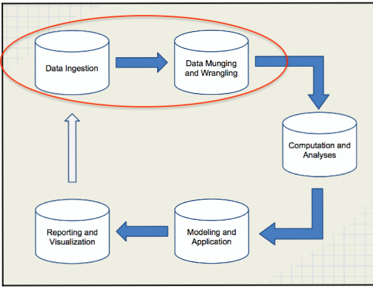
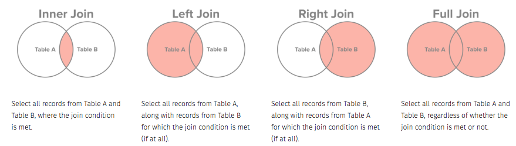
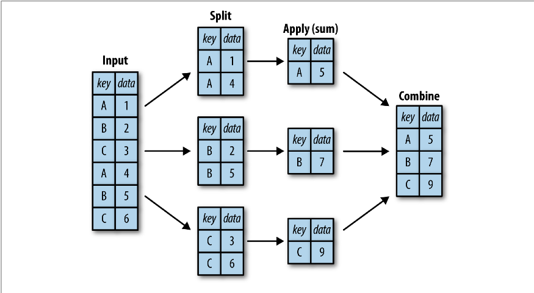

Pandas and plots for data analysis
Abhijit Dasgupta, PhD (ARAASTAT/District Data Labs)
Tools
- Anaconda Python Distribution
- pandas (version 0.23)
- seaborn (version 0.9)
- numpy
- scipy
- matplotlib
Objectives
- Use
pandasfor data ingestion and munging (50 minutes)- Reading data from a variety of sources
- Use of
SeriesandDataFrameobjects - Data cleaning
- Transforming datasets
- The “split-apply-combine” paradigm
- Computing various data summaries
Objectives
- Use
matplotlibandseabornfor creating plots useful for data analysis (30 minutes)- Histograms and density plots
- Bar graphs
- Box and violin plots
- Scatter plots with smoothers
- Trellis graphics/small multiples
- Grouped data
Objectives
- Introduce other
PyDatapackages (10 minutes)statsmodelsfor statistical modelingscikit-learnfor machine learning
Starting up
Starting up
- I assume you know the basics of Python
- For this tutorial, I’ll refresh the concepts of
- lists
[] - dicts
{}
- lists
Lists
Lists are basically buckets where you can store things
- List members can be of any type
- Lists are ordered, i.e there is a first and last member
L1 = ['Abhijit','Dasgupta', 47, True]
L2 = ['Tracy','Bergemann', 43, False]
L1[0]
'Abhijit'
L2[1:3]
['Bergemann', 43]
The notation
a:bmeans we includeabut stop beforeb. In Python we also start counting from 0
You can also start counting from the right.
L2[-2]
43
You can also replace elements
L2[-2] = 49
L2
['Tracy', 'Bergemann', 49, False]
Dicts
Dicts are key-value pairs:
- Keys can be strings, numbers or tuples
- Values can be anything
- There is no ordering
Tuples are like lists, are denoted using
(), and are immutable, i.e., once set, they can’t be changed.
D1 = {'First': "Abhijit", "Last": "Dasgupta", "Age": 47, "Male": True}
D2 = {"First": "Tracy", "Last":"Bergemann", "Age": 43, "Male":False}
D1[0]
---------------------------------------------------------------------------KeyError
Traceback (most recent call last)<ipython-input-1-19ecf3d27f4f> in <module>
----> 1 D1[0]
KeyError: 0
Python packages
Packages we’ll use
import numpy as np
import pandas as pd
import matplotlib.pyplot as plt
import seaborn as sns
You provide shortcuts to save typing (since we’re all lazy)
You call functions and other elements of packages using a . notation
A1 = np.array(L1)
A1
Note that the number and boolean are both converted to strings. Numpy arrays can only hold items of one type, and so conversion happens
Pandas

Pandas
Pandas builds off of numpy.
- A 1-dimensional numpy array becomes a
Series - A 2-dimensional numpy array becomes a
DataFrame
pd.Series(L1)
The elements are all of the same type, but each element has a label, which pandas calls an Index.
pd.Series(L1).index
DataFrames
The DataFrame is a bit different, and was one of the PyData game-changers
A DataFrame is composed of several columns, each of which are Series, but each column can be of a different type
DF = pd.DataFrame([D1,D2])
DF
We can see the types of each column:
DF.info()
You could also create a DataFrame from a numpy 2-d array, and a single dict where all the elements are of the same length (think we want to create a rectangular data structure)
raw = {'First': ['John','Paul','Ringo'],'Last' : ['Lennon','McCartney','Starr'], 'Age' : [np.nan, 69, 68]}
D = pd.DataFrame(raw)
D
I put in a missing value here. I’ll come back to missing values in a bit
Where does pandas play?

Practical Data Science Cookbook by Ojeda, Murphy, Dasgupta, Bengfort
Data ingestion
Pandas can read data from a wide variety of file types
- Text (csv, tsv, fixed width)
- Excel
- Statistical packages (SAS, Stata)
- SQL databases
- Parquet and Feather
- JSON
Pandas also uses a common structure to read these: pd.read_*
Data ingestion
d1 = pd.read_csv('data/diamonds.csv')
d2 = pd.read_excel('data/diamonds.xlsx')
d3 = pd.read_sas('data/diamonds.sas7bdat')
You have to do a bit more for SQL:
from sqlalchemy import create_engine
engine = create_engine('sqlite:///data/diamonds.sqlite')
d4 = pd.read_sql_table('diamonds', engine.connect())
d5 = pd.read_sql('select * from diamonds', engine.connect())
Data munging
Slicing and dicing
scientists = pd.read_csv('data/scientists.csv')
scientists
Extracting a single column
scientists['Age'] # or scientists.Age
Extracting a range of rows
scientists[1:5]
Extracting a range of columns by position
scientists.iloc[:, 1:3]
Extracting a range of columns by label
scientists.loc[:, 'Born':'Age']
When you extract by label (
.loc), pandas grabs the last one too!! Something to be careful of.
scientists.loc[:3,['Name','Age']]
Slicing and dicing by condition
d = pd.read_csv('data/diamonds.csv')
d.head()
d[d.carat < 0.3].head()
d[d.carat < 0.3 & d.color == 'E'].head()
d.query("(carat < 0.3) & (color == 'E')")
Stacking
d1 = pd.read_csv('data/concat_1.csv')
d2 = pd.read_csv('data/concat_2.csv')
d3 = pd.read_csv('data/concat_3.csv')
d1
d2
d3
pd.concat([d1,d2,d3])
pd.concat([d1,d2,d3], axis = 1)
Merging
survey1 = pd.read_csv('data/survey_person.csv')
survey2 = pd.read_csv('data/survey_survey.csv')
survey1
survey2
Joins

Joins
d = pd.merge(survey1, survey2, how='right', left_on='ident', right_on='person')
Data summaries
d = pd.read_csv('data/diamonds.csv')
d.describe(include=np.object)
d.carat.median()
d[['carat','price']].agg([np.mean,np.median, np.std])
d.color.value_counts()
Grouped summaries (split-apply-combine)

Grouped summaries
Find the average price of diamonds by color.
d.groupby('clarity')['price'].mean()
Grouped summaries
What is the average life expectancy in countries by year?
gapminder = pd.read_csv('data/gapminder.tsv', sep='\t')
gapminder.groupby(['continent','year'])['lifeExp'].mean()
Tidy data
The concept of tidy data is that one should have
- One row per observation
- One column per variable
- Each type of observational unit forms a table
Tidying data
pew = pd.read_csv('data/pew.csv')
pew.head()
There’s data in the column headers
There needs to be a column for a new variable for income.
pew_long = pd.melt(pew, id_vars = 'religion')
pew_long.head()
Data cleaning
Data cleaning
diabetes = pd.read_csv('data/diabetic_data.csv')
diabetes.head()
diabetes.race.value_counts()
diabetes[diabetes=='?'] = np.nan
diabetes.race.value_counts()
See if there are any missing, by applying a function to each column
diabetes.apply(lambda x: np.sum(pd.isna(x)))
Filling in missing values
d = pd.DataFrame({'x':[1, 2, np.nan, 4],'y' : [10, np.nan, 92, np.nan]})
d
d.dropna()
d.ffill()
d.fillna(250)
Data visualization
Data visualization
We can start with pandas, which runs matplotlib underneath.
diamonds = pd.read_csv('data/diamonds.csv')
diamonds['price'].plot(kind='hist');
diamonds['price'].plot(kind='density')
diamonds['color'].value_counts().plot(kind='bar')
Looking at 2 variables
diamonds[['color','price']].boxplot(by='color')
diamonds.plot.scatter(x='carat',y='price')
Seaborn
Seaborn
The package seaborn provides more involved graphs, as well as nicer looking graphs It is built on top of matplotlib, so we tend to load both together.
import matplotlib.pyplot as plt
import seaborn as sns
tips = sns.load_dataset('tips')
tips.head()
Univariate plots
sns.set_style('white')
sns.distplot(tips.total_bill);
Bivariate plots
sns.relplot(x = 'total_bill', y = 'tip', data=tips);
sns.relplot(x = 'total_bill', y = 'tip', hue='smoker', data=tips);
sns.relplot(x = 'total_bill', y = 'tip', hue='smoker',style='time', data=tips);
sns.relplot(x = 'total_bill', y = 'tip', data=tips, col='time');
iris = sns.load_dataset('iris')
sns.jointplot(x = 'petal_length',y='petal_width', data=iris);
sns.catplot(x='color',y='price', kind='box',data=diamonds)
sns.catplot(x='color',y='price', kind='violin',data=diamonds)
Facets
gapminder=pd.read_csv('data/gapminder.tsv', sep='\t')
sns.set_style('whitegrid')
sns.relplot(x='year',y='lifeExp', data=gapminder)
sns.relplot(x='year',y='lifeExp', data=gapminder, hue='country',kind='line', row='continent')